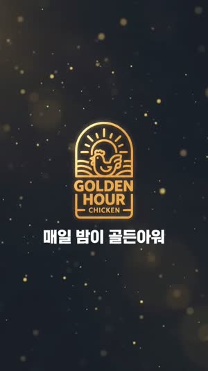

AI 광고영상 워크플로우 정착을 위한프롬프트 생성 모델 확정 & 플랜 도입 기안
3사 10편 동일 조건 비교 검증 · airpass 미디어팀
목차
이 기안은 세 부분으로 되어 있습니다
앞의 03~09p만 보셔도 결정에 필요한 내용은 전부 담겨 있습니다. 10~27p는 그 결론의 근거이고, 28p부터가 판단과 비용입니다. 항목을 누르면 해당 장으로 바로 이동합니다.
01
배경 · 결정 안건
02
검증 기록
03
판단 · 비용 · 결정
실증
먼저, 결과물부터.
T1 단일 소스T3 사운드-온리T4 완전 무입력T4-2 텍스트 교정T5 독립 새 컨셉
사내 미디어팀이 Higgsfield · Gemini Omni로 생성한 숏폼 광고 5컷. 기획·프롬프트 전 과정은 Claude 4.8 Opus High로 수행했습니다.
결정 안건 & 실 비용
3석 증설 · 추가 부담 월 +$60
결정 안건
ChatGPT Business, 3석 증설(연간) 여부를 정해 주십시오
대상
airpass_mediateam 6인
현재 상태
Business 3석 구독 중 이관 불필요
요청
3석 증설 → 총 6석
결제 방식
연간 ($20 / seat·월)
추가 부담 (월환산)
USD +$60
추가 부담 (연)
USD +$720
원화 참고
연 약 110만원 · 월환산 약 9.2만원
추가 부담분 · 3석 증설 (연간)
+$60 /월
연 +$720 약 1,102,414원
이미 3석을 쓰고 있으므로 새로 승인받는 대상은 증설분뿐입니다. 증설 후 총액은 월환산 $120 · 연 $1,440.
증설로 달라지는 것
프롬프트 수행 인원
3명 → 6명
팀 전체 주간 한도
9,000회 → 18,000회
1인당 한도
주 3,000회 (좌석별·합산 불가)
차감 단위
요청 횟수 — 장문 프롬프트도 1회
병목
좌석 수
검토 결과 1안(Claude Team 5석 신규)으로 결정되어도 즉시 전환할 수 있도록, 근거 자료는 도구 중립으로 작성했습니다 — 결론이 바뀌어도 교체 대상은 7장입니다. 한도 수치는 2026년 7월 OpenAI 공식 도움말 기준.
회의 안건
오늘 이 자리에서 정할 것
검토 시간을 줄이기 위해 정해야 할 것부터 정리했습니다. 아래 네 가지가 확정되면 그대로 결재 상신합니다.
안건
선택지
작성자 제안
① 도구
ChatGPT Business 증설 / Claude Team 신규 / 보류
ChatGPT Business 증설
② 결제 방식
연간 / 월간
연간
③ 좌석 수
3석 증설(총 6석) / 조정
3석 증설
④ 후속 검증
한도 문서 대조 · 환율 갱신 — 담당과 시점
제출 직전 일괄
이 자료가 답하는 것
같은 조건에서 어느 도구의 결과물이 나았는가 — 3사 10편 전수 비교.
좌석을 늘리면 무엇이 달라지는가 — 수행 인원과 사용 한도.
추가로 얼마가 드는가 — 총액이 아니라 증설 부담분.
이 자료가 답하지 못하는 것
표본은 10편이고 각 1회 생성 — 재현성 검증은 없습니다.
결과물 평가는 작성자 1인의 판단입니다.
모델 우위는 업데이트마다 바뀝니다 — 영구 결론이 아닙니다.
이 기안의 특이사항
준비하던 결론을 바꿔 제출합니다
초안 가설
Claude Team 도입이 최적이다
기획·프롬프트 레이어를 팀 공용으로 확보하기 위해 Claude Team 5석 도입을 준비했습니다.
동일 조건 실측
3사 · 10편 · 각 30크레딧
같은 트리거 프롬프트로 Claude 4편 · GPT 4편 · Gemini 2편. 전부 720×1280 · 10초 · 원큐 생성.
최종 결론
ChatGPT Business 3석 증설
GPT-5.6 Sol의 기획·프롬프팅 결과물이 우수했습니다. 결론을 바꿉니다.
이 자료는 Claude 도입을 설득하기 위해 준비했습니다. 실측 결과가 반대로 나와, 결론을 바꿔 제출합니다.
Claude 자료를 남겨둔 이유
버린 자료가 아니라 결론에 이른 검증 과정입니다.
비교 대상을 빼면 결론의 근거도 사라집니다.
Claude가 앞선 항목(한글 무결·정합성)도 그대로 싣습니다.
그래서 이 자료의 성격
특정 도구를 옹호하기 위한 자료가 아닙니다.
그때그때 더 나은 도구를 고르기 위한 판단 근거입니다.
가설이 뒤집힌 이력 자체가 이해관계 없음의 근거입니다.
요약
검증된 워크플로우를 팀 전체로 확장
사내 미디어팀은 Higgsfield에서 Gemini Omni로 AI 광고영상을 생성하는 실험을 완료했습니다. 이 실험의 기획·프롬프트 전 과정을 Claude 4.8 Opus (High)로 수행했고, 5개 입력 조건을 설계해 그중 4개를 실행(1개는 플랫폼 제약으로 취소·대체 설계)한 끝에 상업광고 수준의 결과물 5컷을 얻었습니다. 이 방식을 팀원 전체가 동일하게 재현하려면, 결과 품질을 좌우하는 양질의 프롬프트 생성 능력을 팀 공용으로 확보해야 합니다.
기안 핵심 논거
영상 결과 품질은 입력 프롬프트의 정합성에서 갈린다 — 정책 차단 1건은 어휘 순화로, 타이포 오탈자 1건은 문구 고정으로 즉시 교정.
Higgsfield의 여러 모델(GPT Image 2·Nano Banana Pro·Gemini Omni·Kling·Grok·Seedance)에 공통 투입될 프롬프트를 한 곳에서 일관 생성.
플랫폼 제약(영상 1개 제한·오디오 첨부 불가)을 만나 설계 자체를 다시 짜야 결과가 나온다 — 프롬프트 타이핑이 아닌 기획 역량의 문제.
왜 개인 구독이 아니라 팀 좌석인가
개인별 각자 구독·정산 대신 중앙 결제 1건으로 통합.
관리자 제어·SSO 확보 — 입·퇴사 시 좌석 회수 가능.
브랜드 바이블·프롬프트를 팀 공유 공간에 자산화.
업무 대화의 모델 학습 미사용이 기본값.
작업 환경
5단계 파이프라인의 최상위 레이어
실제 제작에 투입되는 도구는 01 기획·프롬프트 → 05 영상 가공의 5단계가 기본입니다. 이 중 01만이 나머지 전체의 입력을 만들어냅니다. 생성 모델은 과제에 따라 교체되지만, 그 모델들에 투입될 지시문을 만드는 레이어는 하나로 고정되어야 합니다.
01
기획 · 프롬프트
GPT-5.6 Sol (High)Claude (Opus 4.8 High)
02
이미지 생성
GPT Image 2 (High)Google Nano Banana Pro
03
이미지 가공
Adobe Photoshop
04
영상 생성
Gemini OmniKling 3.0Grok ImagineSeedance 2.0
05
영상 가공
Adobe After Effects
단축 경로
01 기획 · 프롬프트→04 영상 생성완료
이번 실험의 결과물 대부분이 이 경로입니다. 소스 없이 프롬프트만으로 영상이 나오면 02·03·05단계를 건너뜁니다 — 즉 지시문 하나가 공정 전체를 대체하는 경우가 실제로 발생합니다.
02·04단계의 생성 모델은 과제별로 교체 — 그래서 종속되는 쪽은 생성 모델이 아니라 01단계입니다.
도구 선택 근거
왜 기획·프롬프트 레이어가 결과를 가르는가
우리 파이프라인은 하나의 최종 모델에 종속되지 않습니다. Higgsfield 안에서 쓰는 이미지·영상 모델이 GPT Image 2, Nano Banana Pro, Gemini Omni, Kling, Grok, Seedance 등으로 다양합니다. 실제로 필요한 것은 "어떤 생성 모델이냐"가 아니라, 그 모델들 각각에 정확히 먹히는 프롬프트를 안정적으로 뽑는 상위 레이어입니다.
기획·프롬프팅은 LLM, 영상화는 Gemini Omni — 1차 실험에서 검증된 역할 분담. 아래는 그 실험을 Claude 4.8 Opus High로 수행하며 확인한 내용입니다.
1차 실험에서 확인된 것 (Claude 기준)
워크플로우 상 의미
서술형 프롬프트 설계
키워드 나열이 아닌 장면 서술 → 여러 생성 모델이 동일하게 해석 가능한 지시문
한글 타이포 정확 렌더 유도
따옴표로 화면 문구 고정 → T1·T3·T4·T5 전 컷 한글 타이포 정확도 ◎
조명·카메라 구체화 / 정책 오탐 회피
골든아워·렌즈·심도까지 지시 → 장면 재현성 확보. burst→open 어휘 순화로 차단 1건 즉시 해소, 재생성 크레딧 낭비 방지
기획력 증빙 ①
막혔을 때 설계를 다시 짠 기록
실험은 계획대로 진행되지 않았습니다. 플랫폼 제약 4건에 막혀 테스트 1건이 취소됐고, 오디오 입력 경로가 아예 없었습니다. 결과물이 나온 이유는 프롬프트를 잘 써서가 아니라, 제약에 맞춰 실험 설계 자체를 바꿨기 때문입니다.
플랫폼 제약
확인 경로
우회 설계
L1 · 영상 첨부 최대 1개
업로드 UI 고지
멀티소스 테스트 취소 → 외부 NLE 사전 합성 후 단일 클립 투입
L2 · 소스 10초 초과 시 강제 트림
업로드 시 트림 다이얼로그
업로드 전 10초 선트림으로 의도치 않은 컷 손실 차단
L3 · 오디오 파일 첨부 불가
오디오 슬롯 부재
블랙영상 + 사운드 캐리어 고안 — "검은 화면은 무시하고 오디오에 맞춰 생성"
L4 · 정책 필터 오탐
T5 1차 생성 차단
강한·모호 어휘 순화(burst → open) 후 재투입 성공
L3 우회가 만든 결과
입력은 검은 화면 10초뿐 — 시각 정보 0.
모델이 오디오 리듬에 맞춰 카페 배경·플라잉 치킨 히어로를 완전 생성.
결과물에 검은 프레임 잔존 없음 — 지시가 정확히 먹혔다는 증거.
입력 검은 화면 10초 · 사운드만→결과 완전 생성된 광고
기획력 증빙 ②
프롬프트는 쓰는 게 아니라 디버깅하는 것
실제 투입 프롬프트 (T5 · 발췌)
Generate a vertical (9:16), 10-second Korean fried
chicken commercial from scratch for "GOLDEN HOUR
CHICKEN", concept "When the sun sets, it's golden
hour." A warm, family-friendly story in a neon-lit
evening city and a cozy rooftop. Scenes: the sun
slowly sets and the sky glows amber as a kinetic
clock morphs "6:00 PM" into "골든아워"; a glowing
golden delivery box glides gracefully across the
city with soft light trails; on a rooftop table the
box gently opens, warm light and soft steam rise…
Keep on-screen text exactly as in quotes.
키워드 나열이 아닌 장면 서술 · 화면 문구는 따옴표로 고정 · 조명·동선·질감까지 지시.
발견 → 교정 사이클
01 디자인 용어를 직역해버림
before"logo lockup" → 자물쇠 아이콘

after "태양+치킨 엠블럼" 구체 묘사
02 정책 필터 오탐 · 타이포 오탈자
burst → open 어휘 순화로 차단 해소 — 재생성 크레딧 낭비 차단.
바삭삭 → 바삭바삭 부분 교정 프롬프트로 재투입.
모델이 무엇을 어떻게 오해하는지 읽어내고 어휘 단위로 고쳐 넣는 작업 — 이 사이클의 횟수가 곧 크레딧 비용입니다.
테스트 경위
세 모델이 받은 조건은 같았습니다
먼저 Claude로 Gemini Omni 테스트를 완주했고, 그 환경을 그대로 복제해 Gemini와 GPT에 이식했습니다. GPT의 결과가 준수해 GPT와 Claude만 2회씩 더 비교했습니다.
1차 · 원본
Claude로 옴니 테스트 완주
T1~T5 설계·실행. 여기서 나온 트리거·브랜드 바이블이 이후 모든 라운드의 고정 입력이 됩니다.
2차 · 이식
동일 조건으로 Gemini · GPT
같은 트리거와 브랜드 바이블을 붙여넣어 각 모델이 스스로 프롬프트를 쓰게 했습니다. 대신 써주지 않았습니다.
3~4차 · 확장
GPT · Claude 2회씩 추가
GPT가 참신성·정합성 모두 준수해 두 모델만 연장. 4:4 대칭이 여기서 확보됐습니다.
모든 라운드에 동일하게 투입한 트리거
TRIGGER · 1차 (Claude) — 원본 실험 로그너는 Gemini Omni Flash 프롬프트 엔지니어. 영문 프롬프트 + 한글 번역을,
모델에 최적화된 양·문법으로. 리서치부터 진행하라.
TRIGGER · 2차 (GPT · Gemini) — 두 모델에 토씨까지 동일너는 Gemini Omni Flash 프롬프트 엔지니어다. 영문 프롬프트를 텍스트 상자로 제공
+ 한글 번역은 일반 텍스트로 제공, 모델에 최적화된 양·문법으로. 리서치부터 진행하라.
새로 합성한 브리프가 아니라 1차 실험 로그에 남아 있는 문장입니다. 2차에서 덧붙은 것은 출력 서식 지시 한 구절(텍스트 상자 / 일반 텍스트)뿐이며 역할·과제·산출물은 같습니다. GPT와 Gemini는 완전히 동일한 문장을 받았습니다.
통제 변인과 조작 변인
고정
트리거 문장 · 브랜드 바이블 · 산출 포맷(9:16 · 10초) · 생성 모델(Gemini Omni Flash) · 1편당 30크레딧
고정
프롬프트 대리 작성 금지 — 각 모델이 직접 쓴 원문만 사용
변인
프롬프트를 작성한 모델 하나뿐
생성 모델이 구글의 Gemini Omni라는 점도 그대로 둡니다 — 어느 팔에도 자사 프리미엄이 붙지 않습니다.
요청 · 프롬프트 기록 ①
1차 라운드 · 원본 옴니 테스트
claude1 · claude2의 원본 프롬프트입니다. ↓ ↑ 키 또는 마우스 휠로 스크롤하세요.
STEP 01 · 역할 설정 · 리서치 우선
Claude · Opus 4.8 High
너는 Gemini Omni Flash 프롬프트 엔지니어. 영문 프롬프트 + 한글 번역을, 모델에 최적화된 양·문법으로. 리서치부터 진행하라.
리서치 정리 — 키워드 나열 ✕ / 장면 서술 ○ · 긍정 프레이밍 · 화면 텍스트는 따옴표로 고정 · 조명·카메라 구체화. 이후 산출은 "영문 프롬프트 박스 + 한글 번역" 형식으로 고정.
STEP 02 · 무입력 생성(T4) → 오탈자 발견
Claude · Opus 4.8 High
바삭삭 → 바삭바삭 버전으로, 소리도 다 그대로고 처음 나오는 것만 바꾸면 된다.
첫 등장 텍스트만 고치는 부분 수정 프롬프트를 제공 — 전체 재생성이 아니라 한 단어만 교정해 크레딧 낭비를 막는 설계입니다.
PROMPT · claude1 (T4-2) — input: 소스가편_10s_v4.mp4Using the attached video, change only the first on-screen Korean text near the beginning, which currently reads "바삭삭", so that it correctly reads "바삭바삭". Change nothing else. Keep the audio completely unchanged, and keep the identical timing, position, font, size, color, motion, background footage, and every other text element exactly the same. Only fix that first word.
한글 · 첨부 영상에서 초반에 처음 등장하는 "바삭삭" 텍스트만 "바삭바삭"으로 바꿔라. 그 외에는 아무것도 바꾸지 마라. 오디오는 완전히 그대로, 타이밍·위치·폰트·크기·색상·모션·배경 푸티지·다른 텍스트도 동일하게. 그 첫 단어만 수정하라.
STEP 03 · 새 컨셉(T5) v1 · 정책 차단
Claude · Opus 4.8 High
테스트5는 소스 영향을 안 받은 완전히 새로운 기획, 홍보 대상은 동일. (v1이 NSFW로 차단됨) 프롬프트 다시.
강한·모호 어휘를 순화한 v2를 제공 — burst→open, streak/drop→glide, 음주 표현 제거. 어휘 교체만으로 차단이 해소돼 재생성 크레딧을 추가로 쓰지 않았습니다.
STEP 04 · 새 컨셉(T5) v2 · 통과
Claude · Opus 4.8 High
순화본으로 통과. 이 결과물이 claude2입니다.
PROMPT · claude2 (T5 v2) — input: 없음 (새 컨셉)Generate a vertical (9:16), 10-second commercial from scratch for "GOLDEN HOUR CHICKEN", concept "When the sun sets, it's golden hour." A warm, family-friendly story in a neon-lit evening city and a cozy rooftop. Scenes: the sun slowly sets and the sky glows amber as a kinetic clock morphs "6:00 PM" into "골든아워"; a glowing golden delivery box glides gracefully across the city; on a rooftop table the box gently opens, warm light and soft steam rise, revealing crispy fried and honey-glazed chicken; a cheerful group of friends share the chicken happily. Overlay "지금이, 골든아워 / IT'S GOLDEN HOUR", "바삭 / CRISPY", menu tags, logo "GOLDEN HOUR CHICKEN" + "매일 밤이 골든아워".
한글 · 아무 소스 없이 "GOLDEN HOUR CHICKEN"의 세로 10초 광고를 새 컨셉 "해가 지면, 골든아워"로 생성하라. 네온 저녁 도시·아늑한 루프탑의 따뜻한 가족 친화 서사. 장면: 해가 지며 하늘이 앰버로 빛나고 키네틱 클록이 "6:00 PM"→"골든아워"로 변형 → 발광 골든 배달박스가 도시를 우아하게 가로지름 → 루프탑에서 박스가 살며시 열리며 따뜻한 빛·스팀과 함께 치킨 공개 → 친구들이 즐겁게 나눔. 타이포·메뉴·로고·슬로건.
요청 · 프롬프트 기록 ②
2차 라운드 · 동일 조건 이식
1차와 같은 트리거를 Gemini·GPT에 그대로 붙여넣은 라운드입니다.
이식 방식 · 개입 없음
너는 Gemini Omni Flash 프롬프트 엔지니어다. 영문 프롬프트를 텍스트 상자로 제공 + 한글 번역은 일반 텍스트로 제공, 모델에 최적화된 양·문법으로. 리서치부터 진행하라.
GPT와 Gemini에 토씨 하나까지 같은 문장을 붙여넣었습니다. 이어서 동일한 브랜드 바이블(브랜드명·슬로건·팔레트·시그니처 메뉴·타이포 문구 풀)을 그대로 제공했습니다. Claude는 다른 모델의 프롬프트를 대신 써주지 않았습니다 — 개입하는 순간 3사 비교가 아니라 Claude 3연전이 되기 때문입니다. 각 모델이 스스로 낸 영문 프롬프트를 손대지 않고 Higgsfield에 투입했습니다.
한 가지는 정확히 밝힙니다 — 1차(Claude) 때의 원문은 "영문 프롬프트 + 한글 번역을, 모델에 최적화된 양·문법으로"였습니다. 2차에서는 여기에 출력 형식 지시(텍스트 상자 / 일반 텍스트)가 덧붙었습니다. 역할·과제·산출물은 같고 차이는 서식 지정 한 구절입니다.
Gemini · 요청 1 — 원큐 제작용 프롬프트
Gemini 3.6 Flash (무료)
생성형 원큐로 제작을 끝낼 예정이니, 한글 텍스트들 및 나레이션 포함 프롬프트 제공.
타임코드 4구간 구성으로 응답. 훅·미드·엔드카드에는 한글을 병기했지만 메뉴 구간만 영문 단독입니다 — 해부 09p에서 확인된 "메뉴명 한글 누락"의 원인이 이 한 줄입니다.
PROMPT · gemini1 — 전문A high-energy 10-second 9:16 vertical commercial advertisement for "GOLDEN HOUR CHICKEN" in cinematic 24fps.
[Visual & Motion Sequence]
- 00:00-00:02: Dynamic hook shot. Extreme close-up macro of ultra-crispy golden fried chicken splashing into shimmering amber oil (#F5A623) in slow motion. Bold neon typography pops up in sync: "CRISPY / 바삭바삭".
- 00:02-00:05: Smooth camera pan to a mouth-watering close-up of "HONEY GOLD GLAZE" chicken drizzled with glistening sweet soy glaze. Warm moody atmosphere with charcoal navy (#1B2230) background and vibrant neon pink/cyan ambient lights. Animated serif text overlays: "IT'S GOLDEN HOUR / 지금이, 골든아워".
- 00:05-00:08: Fast motion graphics transitions highlighting signature menu items: "GOLDEN FRIED" and "HONEY GOLD GLAZE". Cozy neon pub aesthetic with appetizing steam rising from the chicken.
- 00:08-00:10: Sleek ending card. Glowing gold logo "GOLDEN HOUR CHICKEN" appears with the tagline "EVERY NIGHT IS GOLDEN HOUR / 매일 밤이 골든아워" rendered in heavy sans-serif and elegant serif fonts.
[Lighting & Style]
Premium casual food styling, dark moody charcoal base, warm amber key lighting, highly detailed crispy textures, liquid gloss, dynamic kinetic motion typography, studio quality commercial color grading.
[Audio & Narration]
Sizzling frying sound effect transitioning into a upbeat synth-pop beat with a deep crunch sound effect. Deep, warm voiceover narration: "Every night is Golden Hour. Golden Hour Chicken."
주목 · 00:05-00:08 메뉴 구간이 "GOLDEN FRIED" and "HONEY GOLD GLAZE"로 영문만 지정돼 있습니다. 다른 구간은 전부 KR / EN 병기인데 메뉴만 빠졌습니다. 결과 영상에서 메뉴명이 한글로 나오지 않은 것은 생성 모델의 한계가 아니라 프롬프트 단계에서 결정된 결과입니다.
Gemini · 요청 2 — 완전히 새로운 기획
Gemini 3.6 Flash (무료)
소스 영향을 안 받은 완전히 새로운 기획, 홍보 대상은 동일. 프롬프트 줘.
힙합·스트리트 감성으로 스타일을 바꿔 응답했습니다. 다만 타임코드 구성·문구·엔드카드는 1차와 거의 동일합니다 — 새 기획이 아니라 새 스타일입니다. 구간 표기도 00:03-00:08로 앞 구간과 겹칩니다.
PROMPT · gemini2 — 전문An ultra-fast, high-energy 10-second 9:16 vertical fast-food video ad for "GOLDEN HOUR CHICKEN" rendered in crisp 24fps. Streetwear and modern hip-hop aesthetic.
[Visual & Motion Sequence]
- 00:00-00:02: Instant hook. A dramatic slow-motion snap-cut of a fried chicken leg breaking open, releasing hot steam and extreme crunch sound visualization. Bold glitch kinetic typography violently splashes across the screen: "CRISPY / 바삭바삭".
- 00:02-00:05: Fast-paced rhythmic edit. Macro shot of rich honey glaze dripping over crispy chicken skin in sync with a heavy bass drop. Vibrant amber gold light beams slashing through a dark slate background. Kinetic text slides: "IT'S GOLDEN HOUR / 지금이, 골든아워".
- 00:03-00:08: Rapid-fire split screen transitions showcasing "GOLDEN FRIED" on the left and "HONEY GOLD GLAZE" on the right, filled with golden sparks and high-contrast color grading.
- 00:08-00:10: High-impact logo reveal. Neon gold text "GOLDEN HOUR CHICKEN" bursts into the frame alongside the glowing tagline "EVERY NIGHT IS GOLDEN HOUR / 매일 밤이 골든아워" in heavy block typography.
[Lighting & Style]
High-contrast street-style lighting, intense golden amber highlights, cinematic deep shadows, explosive particle effects, dynamic snap zoom cuts, hyper-realistic macro food details, modern kinetic motion graphics.
[Audio & Narration]
Heavy bass hip-hop beat drop, amplified crispy crunch sound effects, sizzling bass. Energetic, smooth narration: "Every night is Golden Hour. Golden Hour Chicken."
GPT · 요청 1 — 원큐 제작용 프롬프트
GPT-5.6 Sol · 높음
동일한 브랜드 바이블 제공 후, 원큐 제작용 프롬프트 요청.
타임라인을 4구간으로 쪼개고 구간마다 화면 문구·모션·나레이션을 따로 지정했습니다. Korean should be the primary line을 타이포 규칙으로 못박은 것이 Gemini와 갈리는 지점입니다. 그럼에도 결과에서는 7초 구간에 마대곡버 치킨이라는 브랜드명 붕괴가 나왔습니다(해부 05p).
PROMPT · gpt1 — 전문Create a single continuous 10-second vertical commercial video for a fictional Korean fried chicken brand. Output format: 9:16, 24fps, short-form ad for Reels/Shorts/TikTok.
BRAND:
Brand name: GOLDEN HOUR CHICKEN / Korean name: 골든아워 치킨
Core concept: "golden-hour" as both the perfect time of day and the perfect golden fried color.
Main slogan: "매일 밤이 골든아워" / "EVERY NIGHT IS GOLDEN HOUR"
Sub copy: "지금이, 골든아워" / "IT'S GOLDEN HOUR"
VISUAL STYLE:
Premium-casual mood. Cozy neon pub atmosphere mixed with gourmet food close-ups. Lively, stylish, delicious, and upscale. Use a rich color palette led by honey amber (#F5A623), golden crisp orange (#E08A2B), charcoal navy (#1B2230), with subtle neon pink and cyan accents. Cinematic food lighting, glossy highlights on crispy batter and glaze, shallow depth of field, soft atmospheric haze, premium commercial finish.
TYPOGRAPHY:
Use bold impactful sans-serif for main text and a thin elegant serif for small supporting text. Korean should be the primary line. English should appear as a smaller secondary line directly below or beside the Korean. Render all Korean text cleanly and accurately. Use motion typography as graphic design integrated into the video, not plain subtitles. Do not add any extra text beyond the specified lines.
AUDIO:
Use energetic premium-casual background music with a trendy groove, slightly neon and urban, suitable for a stylish food ad. Add crisp frying sounds, crunchy bite Foley, light whooshes, and tasteful transition sound effects. Include a Korean voice-over narration, warm, confident, energetic, and polished. The voice-over must say the exact Korean lines below in sync with the scene timing.
CAMERA AND EDITING:
Use fast but elegant commercial editing. Combine macro food shots, slow motion crumbs, glaze pours, quick punch-ins, subtle handheld energy, smooth slider moves, and clean match cuts. Keep the pacing dynamic and satisfying, while remaining premium and easy to read.
VIDEO TIMELINE:
0.0-2.0 sec
Open with an irresistible macro hero shot of freshly fried chicken. Show golden crispy texture, steam, oil sheen, tiny crumbs falling, and a dramatic crunchy break or bite moment. The environment hints at a dark cozy neon pub table with warm amber light and soft pink/cyan neon glow in the background.
On-screen motion typography: Main "바삭바삭" / Secondary "CRISPY"
Typography motion: bold kinetic pop-in, crunchy impact, subtle shake timed to the crunch.
Voice-over: "바삭바삭, 황금빛으로 튀겨낸 완벽한 한입."
2.0-4.5 sec
Transition into a more emotional golden-hour food beauty shot. Show the chicken being lifted, turned, or plated beautifully. Add a warm amber glow as if the food itself creates the golden-hour moment. Keep the background premium, dark, and neon-accented.
On-screen motion typography: Main "지금이, 골든아워" / Secondary "IT'S GOLDEN HOUR"
Typography motion: elegant reveal, glowing sweep, smooth upscale motion.
Voice-over: "지금이, 골든아워."
4.5-7.5 sec
Show the two signature menu items clearly and appetizingly. First, "골든 후라이드" as a classic crispy fried chicken beauty shot. Then, "허니골드 양념" as glossy soy-seasoned honey-gold glazed chicken, with a rich sticky glaze coating the surface. Use either split-screen, sequential hero shots, or a clean menu showcase layout, but make both menu names easy to read and visually distinct.
On-screen motion typography: "골든 후라이드" / "GOLDEN FRIED" · "허니골드 양념" / "HONEY GOLD GLAZE"
Voice-over: "골든 후라이드. 허니골드 양념."
7.5-10.0 sec
Finish with a strong branded end card and hero composition. Show the full delicious chicken spread as the hero visual, in the cozy neon pub mood, with the brand identity locked clearly.
On-screen end card: Main logo text "GOLDEN HOUR CHICKEN" / Korean slogan "매일 밤이 골든아워" / Optional small supporting English line "EVERY NIGHT IS GOLDEN HOUR"
Voice-over: "골든아워 치킨. 매일 밤이 골든아워."
IMPORTANT CONTROLS:
Keep all text legible and correctly spelled, especially Korean.
Prioritize delicious food cinematography, premium motion typography, and clear brand readability.
Do not make the video feel cheap, noisy, or overly chaotic.
Do not introduce unrelated people, comedy acting, or unnecessary props.
Do not add extra menus, extra slogans, or random English copy.
The final result should feel like a polished, stylish, premium-casual Korean fried chicken commercial with integrated motion graphics and Korean narration, fully finished in one generation.
GPT · 요청 2 — 완전히 새로운 기획
GPT-5.6 Sol · 높음
소스 영향을 안 받은 완전히 새로운 기획, 홍보 대상은 동일. 프롬프트 줘.
"밤을 골든아워로 바꾸는 한입" — 정지한 미니어처 도시가 한 입 베어무는 순간 황금빛으로 되살아나는 서사를 새로 만들었습니다. Gemini가 같은 요청에 스타일만 바꾼 것과 대비되는 지점입니다. 다만 브랜드 톤(네온 펍)에서는 이탈했습니다.
PROMPT · gpt2 — 전문Create a fully original, single-generation 10-second vertical commercial for the fictional Korean fried chicken brand "GOLDEN HOUR CHICKEN."
OUTPUT: 9:16 vertical video, exactly 10 seconds, 24fps, optimized for Reels, Shorts, and TikTok.
CORE CREATIVE CONCEPT: "The bite that turns night into golden hour."
Do not imitate or continue any uploaded source image, source video, previous composition, camera angle, environment, lighting setup, or visual concept. Create a completely new visual world from scratch.
The commercial begins in a surreal miniature city at midnight. The entire city is frozen in dark charcoal navy, as though time has stopped. Buildings, streets, signs, and objects appear as elegant monochrome architectural miniatures. At the center of the city, a single piece of perfectly crispy fried chicken rests on a small pedestal like a precious golden artifact.
A human hand enters the frame and lifts the chicken. As the chicken is bitten, an explosive ring of warm honey-amber light travels outward through the miniature city. Wherever the light passes, the dark city transforms into a vibrant golden-hour world. Windows illuminate, streets glow, metallic surfaces become warm gold, and the frozen environment comes alive with rhythmic movement.
BRAND STYLE:
Premium-casual Korean fried chicken advertising. Bold, modern, energetic, but sophisticated.
Main colors: honey amber #F5A623, golden crisp orange #E08A2B, charcoal navy #1B2230. Use neon pink and cyan only as very small accent lights.
SHOT AND TIMING:
0.0-1.8 seconds:
Begin with an overhead camera slowly descending into a completely dark, frozen miniature city at midnight. Everything is charcoal navy and nearly monochrome. A single golden fried chicken piece glows softly at the exact center of the city.
On-screen kinetic typography: "밤이 멈춘 순간" / Small English line: "WHEN NIGHT STOPS"
The typography should appear as thin elegant letters constructed from the city streets.
Korean voice-over: "밤이 멈춘 순간,"
1.8-3.2 seconds:
A hand enters, lifts the glowing fried chicken, and takes one powerful crunchy bite. Show a brief macro insert of the crispy surface cracking, with tiny golden crumbs suspended in slow motion.
On-screen impact typography: "바삭!" / Small English line: "CRUNCH!"
The Korean word must appear exactly as written. Synchronize the typography, crunch sound, and visual impact precisely.
Korean voice-over: "황금빛 한입이 시작된다."
3.2-6.3 seconds:
A circular wave of honey-amber energy expands from the bite and travels across the miniature city. The city rapidly transforms from midnight navy into radiant golden hour. Buildings illuminate in sequence, streets become flowing golden lines, and the entire environment begins moving to the rhythm of the music.
Integrate large motion typography into the transforming architecture: "지금이, 골든아워" / Small English line: "IT'S GOLDEN HOUR"
The words should form from illuminated building windows and glowing streets, not appear as ordinary subtitles.
Korean voice-over: "지금이, 골든아워."
6.3-8.2 seconds:
The golden wave reveals two elevated product platforms inside the city.
On the first platform: classic crispy fried chicken with a dry, crunchy, golden surface. Exact text "골든 후라이드" / Small English "GOLDEN FRIED"
On the second platform: glossy honey-soy glazed chicken with rich amber coating. Exact text "허니골드 양념" / Small English "HONEY GOLD GLAZE"
Use a fast, elegant camera orbit connecting both menu platforms in one continuous movement.
Korean voice-over: "골든 후라이드, 허니골드 양념."
8.2-10.0 seconds:
Pull the camera rapidly upward. The glowing miniature city is revealed to form the silhouette of a radiant sun or golden clock face around the hero chicken platter. Finish with a clean premium brand lock-up.
Exact main text: "GOLDEN HOUR CHICKEN" / Exact Korean slogan: "매일 밤이 골든아워" / Small English slogan: "EVERY NIGHT IS GOLDEN HOUR"
Korean voice-over: "골든아워 치킨. 매일 밤이 골든아워."
TYPOGRAPHY:
Use bold geometric sans-serif typography for impact words and a thin refined serif or light sans-serif for small English supporting lines. Korean must always be visually dominant. Render every Korean and English phrase exactly as provided. Do not translate, paraphrase, misspell, duplicate, distort, or replace any specified text. Do not generate random signs, menu names, prices, subtitles, or background lettering.
IMPORTANT CONTROLS:
Create one visually continuous commercial, not a disconnected montage. Keep the hero chicken realistic, appetizing, crispy, and consistently shaped across all shots. Maintain coherent lighting and spatial continuity throughout the city transformation. Avoid ordinary restaurant interiors, neon pub tables, chefs, diners, delivery scenes, kitchens, comedy, mascots, cartoon characters, or generic fast-food imagery.
2차 라운드 판정
이 시점의 판단은 Claude 우세였습니다. 한글 정확도에서 격차가 컸기 때문입니다. GPT는 기획을 새로 만드는 능력에서, Gemini는 같은 요청에 스타일만 바꾸는 한계에서 각각 특징이 드러났습니다. 결론이 뒤집히는 것은 다음 라운드입니다.
요청 · 프롬프트 기록 ③
3~4차 라운드 · GPT vs Claude 전문
결론을 바꾼 네 편의 프롬프트 전문입니다. 길이·구조를 직접 비교해 보십시오.
gpt3 · 원안 기획 — 암전 → 골든아워
GPT-5.6 Sol · 높음
새 컨셉을 스스로 만들고 같은 응답에서 타임라인·타이포·오디오·네거티브 제약까지 완성했습니다. 이 기획을 뒤에서 claude4가 차용합니다.
PROMPT · gpt3 — 전문Create a completely original 10-second vertical commercial for a fictional premium chicken brand called "GOLDEN HOUR CHICKEN."
Generate the entire video from scratch. Do not reference, preserve, imitate, or reuse any subject, background, composition, camera movement, lighting, color, object, or action from an uploaded source video.
FORMAT
9:16 vertical, 10 seconds, 30 fps, polished high-end food advertising, designed for Instagram Reels, YouTube Shorts, and TikTok.
CORE CONCEPT
A dark midnight world is transformed into a radiant "golden hour" by the arrival of perfectly fried chicken. The commercial should feel like a premium motion-graphics campaign combining cinematic food photography, glowing neon pub atmosphere, dynamic transitions, and bold kinetic typography.
VISUAL STYLE
Premium-casual Korean chicken advertising. Deep charcoal navy background, warm honey-amber lighting, golden-orange highlights, subtle neon pink and cyan accents. Rich contrast, glossy reflections, controlled bloom, cinematic shadows, shallow depth of field, highly detailed crispy texture, realistic steam, and appetizing sauce viscosity. Energetic but sophisticated, never cheap or cartoonish.
TIMELINE
[0.0-1.8 seconds]
Begin in near-total darkness. A single freshly fried chicken piece falls slowly through the center of the frame in extreme macro slow motion. As it rotates, warm golden light spreads across its crispy surface. The moment it reaches the lower center, it creates a circular shockwave made of glowing crumbs, amber sparks, and fine seasoning particles.
The bold word "CRISPY" appears behind the chicken as a massive dimensional typographic impact. The letters rapidly expand outward, briefly vibrate from the shockwave, and catch golden reflections from the chicken. Add the smaller Korean word "바삭" directly beneath it.
[1.8-4.5 seconds]
Use the expanding golden shockwave as a seamless transition into a dark premium tabletop scene. Two signature dishes rise onto separate glossy black pedestals:
Left: classic golden fried chicken with an exceptionally crisp, dry, flaky crust.
Right: honey-gold glazed chicken with a rich, glossy amber sauce slowly flowing over the surface.
The camera performs a smooth curved orbit around both dishes. Crispy crumbs float around the fried chicken while a ribbon of honey-colored glaze spirals gracefully around the glazed chicken.
Introduce clean menu typography beside each dish:
"GOLDEN FRIED" / "골든 후라이드" / "HONEY GOLD GLAZE" / "허니골드 양념"
The typography should move with the camera perspective and feel anchored inside the three-dimensional scene.
[4.5-7.3 seconds]
The glaze ribbon sweeps across the lens and transforms the background into an intimate midnight neon pub. The chicken remains the visual hero in the foreground while warm pendant lights, soft silhouettes, and pink-cyan neon reflections appear in the background.
Push the camera slowly toward the food as steam rises and catches the amber light. In the center, reveal the phrase:
"IT'S GOLDEN HOUR" / "지금이, 골든아워"
Animate the text as if thin golden light is drawing each letter into existence. Hold it long enough to be clearly readable.
[7.3-10.0 seconds]
Transition into a clean premium end card. A dramatic bucket filled with both golden fried chicken and honey-gold glazed chicken sits in the center on a reflective charcoal-navy surface. A circular amber light behind the bucket resembles a setting sun and creates a subtle golden halo.
Reveal the brand name in large bold typography: "GOLDEN HOUR CHICKEN"
Below it, display the slogan: "EVERY NIGHT IS GOLDEN HOUR" / "매일 밤이 골든아워"
Use elegant golden illumination, subtle neon edge highlights, and a restrained final sparkle across the brand name. Keep the complete end card stable and clearly readable during the final 1.5 seconds.
MOTION TYPOGRAPHY
All typography must be deliberately designed as part of the environment, not added as ordinary subtitles. Use bold modern sans-serif lettering for major phrases and a thin elegant serif for secondary English copy. Maintain precise spelling and preserve all Korean and English text exactly as written. Keep text inside the safe central area of the vertical frame.
CAMERA AND MOTION
Use smooth, intentional commercial camera movement: extreme macro rotation, curved product orbit, fluid lens-cover transition, and a controlled final push-in. Avoid excessive handheld movement, random speed ramps, chaotic cuts, or abrupt camera direction changes.
AUDIO
Create synchronized premium commercial sound design: a sharp crispy crunch at the opening impact, subtle flying crumb sounds, a smooth sauce-sweep transition, warm neon ambience, restrained bass pulses, and a final polished brand chime. No dialogue and no voice-over.
QUALITY AND RESTRICTIONS
Photorealistic food only. No people, hands, mascots, utensils blocking the product, unrelated ingredients, distorted chicken shapes, malformed containers, excessive grease, burned crust, illegible typography, random letters, duplicated text, watermarks, third-party logos, or additional brand names.
The finished video must look like one coherent, professionally art-directed advertisement rather than several unrelated AI-generated shots.
gpt4 · THE GOLDEN FREQUENCY — 크런치를 사운드로
GPT-5.6 Sol · 높음
컨셉이 타이포·모션·오디오 지시까지 관통합니다. 한글을 주 언어로 명시하고 문구 변형을 금지한 것이 한글 오류 0의 직접적 원인입니다. 10편 중 완성도 최상으로 판단했습니다.
PROMPT · gpt4 — 전문 (발췌 없음 · 지면상 줄바꿈만 정리)Create a completely original, single-generation 10-second vertical motion-graphics commercial for the fictional Korean fried chicken brand "GOLDEN HOUR CHICKEN."
OUTPUT: 9:16 vertical format, exactly 10 seconds, 24fps, designed for Reels, Shorts, and TikTok.
ORIGINALITY CONTROL: Generate an entirely new commercial from scratch. Do not imitate, continue, reference, or inherit any uploaded image, uploaded video, previous scene, restaurant interior, miniature city, golden clock, sunset landscape, camera composition, lighting arrangement, or visual motif.
CREATIVE CONCEPT: "THE GOLDEN FREQUENCY"
Transform the sound and texture of crispy chicken into a premium audiovisual performance. The crunch becomes a visible golden sound wave. Fried crumbs become rhythmic particles. Honey glaze becomes a flowing musical ribbon. Motion typography reacts precisely to every beat and food sound.
The entire commercial takes place inside a futuristic black sound studio rather than a restaurant. The studio is minimal and architectural, with a glossy charcoal floor, a circular performance platform, restrained amber lighting, and extremely subtle cyan and neon-pink reflections.
BRAND PALETTE: Honey Amber #F5A623 / Golden Crisp #E08A2B / Charcoal Navy #1B2230 / very restrained neon pink and cyan accents
FOOD DIRECTION: The chicken must remain photorealistic, freshly cooked, hot, crispy, and highly appetizing. "골든 후라이드" must have a dry, irregular, deeply crispy golden crust with visible crunchy flakes. "허니골드 양념" must have a rich amber honey-soy glaze, smooth glossy highlights, controlled viscosity, and a premium lacquered appearance. Avoid plastic-looking food, artificial symmetry, excessive grease, burnt surfaces, or cartoon-like textures.
CAMERA AND MOTION: Use one coherent audiovisual sequence with seamless transitions. Combine precise macro photography, rapid rhythmic punch-ins, controlled slow motion, elegant circular camera movement, shallow depth of field, and synchronized motion graphics. Every visual event must be timed tightly to the soundtrack. Do not create a random montage of unrelated shots.
TIMELINE:
0.0-1.6 SECONDS - SILENCE BEFORE THE CRUNCH
Open inside a pitch-black premium sound studio. A single piece of "골든 후라이드" floats several centimeters above a matte-black circular platform under one narrow amber spotlight. The camera makes a slow macro push toward the crispy surface. A thin horizontal audio line appears behind the chicken.
Exact on-screen Korean text: "소리를 켜" · Small English supporting text: "TURN UP THE CRUNCH"
Korean voice-over: "소리를 켜."
1.6-3.5 SECONDS - CRUNCH IMPACT
The fried chicken breaks open with one powerful, highly detailed crunch. Show the crust cracking in extreme macro. Golden crumbs burst outward in slow motion while steam escapes. At the exact impact, the thin audio line explodes into a large honey-amber waveform that travels across the entire vertical frame.
Exact kinetic Korean typography: "바삭바삭" · Small English supporting text: "CRISPY"
The letters must appear from the waveform itself, expanding sharply on the first crunch and bouncing subtly on the secondary crackle sounds.
Korean voice-over: "바삭함이 터지는 순간."
3.5-6.8 SECONDS - TWO FLAVORS, TWO FREQUENCIES
The golden waveform divides into two contrasting sound channels.
LEFT CHANNEL: Dry golden crumbs move rhythmically like percussion beats and assemble into a rotating hero shot of classic fried chicken. Exact Korean menu text: "골든 후라이드" · Small English text: "GOLDEN FRIED"
RIGHT CHANNEL: A flowing amber sound ribbon transforms into glossy honey-soy glaze and wraps smoothly around a second chicken piece. Exact Korean menu text: "허니골드 양념" · Small English text: "HONEY GOLD GLAZE"
Use one elegant camera orbit to connect both products. The two menu items must remain visually distinct and easy to recognize.
Korean voice-over: "골든 후라이드. 허니골드 양념."
6.8-8.3 SECONDS - THE GOLDEN DROP
The two audio channels converge at the center of the studio. A bass drop sends a circular golden pulse across the floor and lifts both menu items onto one premium black serving platter.
Large Korean motion typography behind the platter: "지금이, 골든아워" · Small English supporting line: "IT'S GOLDEN HOUR"
Build the letters from stacked audio waveforms.
Korean voice-over: "지금이, 골든아워."
8.3-10.0 SECONDS - BRAND SONIC LOCK-UP
The surrounding waveforms contract rapidly into a clean circular golden sonic symbol behind the hero platter. Finish on a minimal premium end card with a deep charcoal background and a refined amber halo.
Exact main brand text: "GOLDEN HOUR CHICKEN" · Exact Korean slogan: "매일 밤이 골든아워" · Small English slogan: "EVERY NIGHT IS GOLDEN HOUR"
End with a short, memorable three-note sonic logo and a final crisp crackle.
Korean voice-over: "골든아워 치킨. 매일 밤이 골든아워."
TYPOGRAPHY: Korean is always the primary visual language. Use a bold geometric sans-serif for Korean headline typography and a thin elegant serif or light sans-serif for smaller English supporting text. Typography must behave like part of the sound system: waveform expansion, rhythmic scaling, frequency vibration, and clean beat-synchronized movement. Render every phrase exactly as written. Do not misspell, paraphrase, translate, duplicate, deform, or replace any specified text. Do not generate random interface labels, prices, signs, subtitles, logos, or background letters.
AUDIO: Create a modern premium electronic track built from restrained sub-bass, crisp percussion, subtle vinyl-like texture, and polished digital sound design — one detailed initial crunch, small crust crackles, falling crumb sounds, a wide stereo waveform pulse, a smooth liquid glaze sound, one controlled bass drop, elegant transition whooshes, and a concise three-note brand sonic logo. The Korean narration must be clear, warm, confident, youthful, and sophisticated. Keep the music underneath the narration and preserve speech clarity.
IMPORTANT: Create a premium audiovisual food campaign, not a nightclub video, music visualizer, generic equalizer animation, restaurant commercial, cooking tutorial, or comedy advertisement. Do not show diners, chefs, kitchens, delivery riders, mascots, cartoon characters, city scenes, sunsets, clocks, or ordinary restaurant interiors. Keep the visual composition clean and readable. Use particles only as controlled fried crumbs. Avoid excessive neon, chaotic waveforms, overwhelming flashes, visual clutter, unreadable Korean, cheap-looking gold materials, and unnecessary camera shake.
The final result must look like a fully finished, high-end Korean fried chicken commercial in which crunch, flavor, typography, music, and brand identity operate as one precisely synchronized motion-graphics performance.
claude3 · 표준 구성 — 훅 → 미드 → 메뉴 → 엔드
Claude · Opus 4.8 High
가장 짧고 규범적인 프롬프트입니다. 한글 정확 렌더와 Only one text block on screen at a time을 제약으로 먼저 못박았습니다 — 결과도 한글 무결이었습니다.
PROMPT · claude3 — 전문Vertical 9:16 fried chicken commercial with Korean motion typography, 10 seconds, 24fps, for Reels/Shorts/TikTok. Text-to-video. Render all on-screen text in accurate, clean Korean Hangul characters.
Brand mood: premium-casual, cozy neon pub at night, gourmet close-ups. Palette: honey amber (#F5A623), golden crisp (#E08A2B), charcoal-navy (#1B2230) base, neon pink and cyan accents.
Shot sequence, one continuous edit:
(0-3s) HOOK: extreme macro of golden fried chicken, crispy crust with rising steam, a piece pulled apart. Bold Korean word "바삭바삭" punches onto the upper center.
(3-6s) MID: camera pulls back to a chicken platter in a neon-lit pub, honey glaze drizzling in slow motion. Korean text "지금이, 골든아워" slides up from the bottom.
(6-9s) MENU: two hero shots - classic fried then honey-glazed - with small clean Korean labels "골든 후라이드" and "허니골드 양념".
(9-10s) END/CTA: logo lockup on charcoal-navy, bold amber English "GOLDEN HOUR CHICKEN" with Korean tagline below "매일 밤이 골든아워".
Camera: punchy cuts on the hook, smooth push-in on the glaze pour, locked-off final logo.
Sound: warm upbeat lo-fi groove, crispy crunch SFX, gentle sizzle on the pour, soft chime on the logo. Korean female voiceover, warm: "바삭바삭" over the hook, "지금이, 골든아워" over the mid, ending "매일 밤이 골든아워, 골든아워 치킨."
Constraints: Korean text must be short, correctly spelled, and clearly legible - never garbled or invented characters. Only one text block on screen at a time. Food realistic and appetizing. Warm golden lighting. No flicker.
claude4 · gpt3 기획 차용본
Claude · Opus 4.8 High
gpt3의 결과가 좋아 같은 컨셉을 넘겨주고 프롬프트를 다시 설계하게 한 편입니다. 화면 문구를 한글로 지정하고 One label at a time까지 명시했으나, 결과에서는 라벨 2개가 동시에 표출됐습니다.
PROMPT · claude4 — 전문 (한글 지시 반영본)Completely original 9:16 vertical commercial for a fictional premium chicken brand "GOLDEN HOUR CHICKEN". 10 seconds, 24fps. High-end food advertising for Reels/Shorts/TikTok. Text-to-video, generated entirely from scratch - no reference footage. Render all on-screen Korean text in accurate, correctly-spelled Hangul - never garbled, invented, or duplicated characters.
Core concept: a dark midnight world is turned into a radiant "golden hour" by the arrival of perfectly fried chicken. Premium motion-graphics campaign feel - cinematic food photography, neon pub glow, dynamic transitions, bold kinetic typography.
Visual style: deep charcoal-navy (#1B2230) background, warm honey-amber (#F5A623) and golden-crisp (#E08A2B) lighting, subtle neon pink and cyan accents. Rich contrast, glossy reflections, controlled bloom, shallow depth of field, highly detailed crispy texture, realistic steam, appetizing sauce viscosity. Energetic but sophisticated.
One coherent art-directed flow across four beats:
(0-1.8s) Near-total darkness. A single fried chicken piece falls slowly through center frame in extreme macro slow motion, rotating as warm golden light spreads over its crust. As it hits lower center it triggers a circular shockwave of glowing crumbs and amber sparks. Behind it, the bold Korean word "바삭" expands outward with dimensional impact and catches golden reflections.
(1.8-4.5s) The shockwave becomes a seamless transition into a dark premium tabletop. Two dishes rise on glossy black pedestals - left: classic dry flaky golden fried chicken; right: honey-gold glazed chicken with amber sauce flowing over it. Camera does a smooth curved orbit around both. A clean Korean label anchored in 3D space beside each dish: "골든 후라이드" on the left, "허니골드 양념" on the right. One label at a time as the camera reaches each dish.
(4.5-7.3s) A ribbon of honey glaze sweeps across the lens and transforms the background into an intimate midnight neon pub - warm pendant lights, soft silhouettes, pink-cyan reflections. Chicken stays hero in foreground. Camera pushes slowly in as steam rises through amber light. Centered Korean text draws in as if written by thin golden light: "지금이, 골든아워". Hold it clearly readable.
(7.3-10s) Clean premium end card: a bucket of both fried and glazed chicken sits center on a reflective charcoal-navy surface, a circular amber light behind it like a setting sun casting a golden halo. Reveal large bold English brand name "GOLDEN HOUR CHICKEN" with the Korean slogan below it "매일 밤이 골든아워". Keep the end card stable and readable for the final 1.5 seconds.
Camera: extreme macro rotation - curved product orbit - fluid glaze-sweep lens transition - controlled final push-in, then locked-off on the end card. No handheld shake, no random speed ramps, no chaotic cuts.
Audio: sharp crispy crunch at the opening impact, subtle flying-crumb ticks, a smooth sauce-sweep whoosh on the transition, warm neon ambience, restrained bass pulses, a polished brand chime on the logo. Korean female voice-over, warm and premium: "바삭" on the opening impact, "지금이, 골든아워" over the neon-pub push-in, and "매일 밤이 골든아워, 골든아워 치킨" on the end card.
Typography: bold modern sans-serif for major Korean words, thin elegant serif for the English brand name - designed as part of the environment, not subtitles. Every text block must be short, correctly spelled Hangul, one at a time, inside the safe central area of the vertical frame.
Constraints: photorealistic food only. No people, hands, or utensils blocking the product; no distorted chicken shapes, malformed containers, burned crust, illegible or duplicated typography, random or broken Korean characters, watermarks, or third-party logos. Must read as one professionally art-directed ad, not several unrelated shots.
claude4 1차 시행분 · 폐기 · 시행 횟수 미차감
Claude · Opus 4.8 High
첫 시행에서는 화면 문구를 "CRISPY" · "GOLDEN FRIED" · "HONEY GLAZE" · "IT'S GOLDEN HOUR"처럼 영문으로만 지정했습니다. 결과가 영문 일색으로 나온 것은 모델 결함이 아니라 지시 누락이므로, 한글을 반영해 재생성한 위 편을 정식 4차로 삼고 이 시행은 횟수에서 차감하지 않았습니다. 다만 이 폐기본에는 no third-party logos 지시에도 불구하고 KFC 로고가 렌더됐고, 재생성본에서는 재발하지 않았습니다.
gpt3이 스스로 만든 "암전 → 골든아워" 기획을 claude4에 그대로 제시하고, 그 컨셉으로 프롬프트를 다시 설계하게 했습니다. 기획 아이디어가 동일한 두 결과물의 대비입니다.
원안 · gpt3 기획 생성
새 컨셉을 스스로 만들고, 같은 응답에서 프롬프트까지 완성.
암전→충격파→페데스탈→리본 전환→네온 펍이 한 흐름으로 연결.
한글 전부 정확 · 영문 중복 오류 1건(HONEY GOL GOLD GLAZE).
차용안 · claude4 기획 차용
한글 무결 · 타사 로고 없음 — 정합성은 유지.
프롬프트의 One label at a time을 어기고 라벨 2개 동시 표출.
5초 전환 구간 텍스트 겹침 · 연출 밀도가 원안보다 얕음.
핵심 — 기획을 만드는 쪽과 받아서 실행하는 쪽의 조건이 뒤바뀐 비교입니다. 유리한 위치였던 차용안이 원안의 완성도에 미치지 못했다는 점이, 이번 전환의 가장 직접적인 근거입니다.
실증 근거
실험이 증명한 결과 · GOLDEN HOUR CHICKEN
#1
T1 · 단일 소스
#2
T3 · 사운드-온리
#3
T4 · 완전 무입력
#4
T4-2 · 텍스트 수정본
#5
T5 · 독립 새 컨셉
1 / 5
5
최종 결과 컷
150
최종 5컷 생성 크레딧
₩12,585
최종 5컷 생성 비용
5 / 5
한글 타이포 정확 렌더
소스 → ffmpeg 분석 → 기획·프롬프트 Claude 4.8 Opus High → 생성 Gemini Omni → 검수 (실험 공정 기준)
무입력(T3·T4·T5)에서도 상업광고급 결과 · 긴 한글 문구까지 오탈자 없이 렌더. ※ 크레딧은 최종 채택 5컷 기준이며, 교정 과정의 재생성분은 별도입니다.
선택지
무엇에 무게를 두느냐에 따라 답이 갈립니다
두 도구는 잘하는 영역이 다릅니다. 하나로 단정하지 않고 판단 기준을 드러내니, 어느 쪽에 무게를 둘지 정해 주시면 그에 맞춰 기안하겠습니다.
1안 · Claude Team — 정합성 우위
$100 /월
Standard 5석 신규 · 연 $1,200
한글 타이포 무결 4/4 — 오탈자 0
브랜드 톤앤매너·중의성 준수
결정 지점을 먼저 묻는 절차적 대화 구조
상위 모델 상향 시 토큰·속도·한도 부담
한도 수치 미공개 — 용량 계획 불가
2안 · ChatGPT Business — 수행능력 우위 ★
+$60 /월
3석 증설 · 추가 부담 연 +$720
새 기획을 스스로 만들고 한 번에 정합성까지 (gpt3·4)
컨셉이 타이포·모션·오디오까지 일관 관통 (gpt4)
한도 1인당 주 3,000회 명시 — 용량 계획 가능
기존 3석 구독 중 — 계정 이관 불필요
초기 라운드(gpt1·2) 한글 붕괴 이력
1안은 신규 도입이라 전액이 추가 부담이고, 2안은 기존 계약의 증설이라 증설분만 추가됩니다 — 총액이 아니라 성격이 다른 비용입니다. 2안의 증설 후 총액은 월환산 $120 · 연 $1,440입니다.
실무자 판단
작성자는 2안을 권합니다
판단 근거
기획을 만드는 일까지 대체된다 — 정합성은 프롬프트를 고쳐 따라잡을 수 있지만, 컨셉을 스스로 내는 능력은 지시로 메우기 어렵습니다.
같은 컨셉을 줬을 때 실행 결과가 갈렸다 — 유리한 위치의 차용안이 원안에 못 미쳤습니다(20p).
한글 오류는 프롬프트로 교정된 이력이 있다 — gpt1·2의 붕괴가 gpt3·4에서 해소됐습니다.
용량 계획이 가능하다 — 좌석당 주 3,000회가 공개돼 있어 증설 효과를 수치로 설명할 수 있습니다.
이 판단을 뒤집을 수 있는 조건
브랜드 정합성·한글 무결을 최우선 지표로 둔다면 1안이 맞습니다.
결과물보다 절차와 문서화를 중시하는 업무 비중이 크다면 1안이 맞습니다.
표본은 10편이고 평가자는 1인입니다 — 다른 기준이면 다른 결론이 나올 수 있습니다.
모델은 업데이트마다 우위 영역이 바뀝니다. 지금 시점에서 숏폼 영상 기획과 영상 프롬프팅은 GPT가 앞섭니다. 이 자료는 특정 도구를 옹호하려는 것이 아니라, 그때그때 더 나은 도구를 고르기 위한 판단 근거입니다.
한계 명시
이 비교가 증명하지 못하는 것
판단 근거로 쓰려면 한계를 먼저 밝혀야 합니다. 아래는 이 자료를 읽을 때 감안해야 할 조건입니다.
한계
내용
해석 시 감안할 점
표본 수
Claude 4편 · GPT 4편 · Gemini 2편, 총 10편
통계적 유의성을 주장할 수 없는 규모
재현성
각 프롬프트당 1회 생성 — 같은 프롬프트 재실행 없음
생성 모델 자체의 편차가 결과에 섞여 있음
평가 주체
작성자 1인의 육안 평가 (1초 단위 프레임 기준)
정량 지표가 아닌 주관 판단
Gemini 등급
무료 3.6 Flash — 유료 상위 모델 미포함
동급 비교가 아님 · 현행 기준선 역할로만 사용
한도 수치
OpenAI 공식 도움말 기준 (2026-07)
공식 문서가 변경 가능성을 명시 · 제출 전 재대조
공통 조건 — 동일 트리거 프롬프트 · 9:16 · 10초 · 생성 1회당 30크레딧 · Higgsfield / Gemini Omni Flash로 영상화. 기획·프롬프트 작성 모델만 변인입니다.
비용 구조
비용을 결정하는 건 재작업 횟수입니다
별도 레퍼런스 제작 건에서 같은 결과물을 두 가지 방식으로 만들어 비교한 기록입니다. 반복해서 뽑을 것인가, 필요한 동작을 먼저 규정하고 거기 맞는 방식을 고를 것인가의 차이였습니다.
방식 A · Kling 3.0 일반 생성
생성 횟수38회
크레딧665
환산 비용₩55,794
시간2시간 53분
두 방식이 목표로 한 동일 결과물 · Motion Control 최종본
방식 B · Kling Motion Control
생성 횟수2회
크레딧145
환산 비용₩12,166
시간40분
크레딧 4.6×시간 4.3×
핵심 — 같은 결과물인데 크레딧 4.6배, 시간 4.3배가 벌어졌습니다. 방식 B가 이긴 이유는 도구가 좋아서가 아니라 필요한 동작을 먼저 규정했기 때문입니다 — 그래야 Motion Control이라는 적합한 방식을 고를 수 있습니다. 무엇을 어떻게 지시할지 정하는 것이 01단계의 산출물이며, 팀 전원이 같은 수준으로 지시할 수 있어야 이 절감이 팀 전체로 확산됩니다.
근거: 사내 AI 레퍼런스 제작 기록 — 최종 영상 9컷 · 총 2,841.5크레딧 · 약 ₩238,403 · 21시간 11분 (1크레딧 ≈ ₩83.9, Higgsfield 팀 플랜 기준).
요금 구조
총액이 아니라 증설 부담분입니다
현재 ChatGPT Business 3석을 구독 중입니다. 따라서 이번에 새로 승인받는 대상은 총액이 아니라 증설되는 3석분입니다.
좌석 단가
월간 결제
연간 결제
Business / seat현행
$25
$20
결제 방식
현재 3석
증설 후 6석
추가 부담
원화 참고
연간 결제권장
연 $720 월환산 $60
연 $1,440 월환산 $120
연 +$720 월환산 +$60
약 110만원/년
월간 결제
월 $75
월 $150
월 +$75
약 138만원/년
증설로 얻는 것
프롬프트 업무 수행 인원 3명 → 6명 — 지금은 좌석 수가 병목입니다.
팀 전체 주간 한도 9,000회 → 18,000회 (좌석별 3,000회, 합산·이전 불가).
검증된 제작 방식을 팀원 전체가 동일하게 재현.
Business가 추가로 주는 것
Extra High · Sol Pro 추론 등급 해금 (Plus는 Medium/High까지).
SSO · 관리자 제어 · 컴플라이언스 · 커넥터.
계약 기간 중 증설분은 잔여 기간만큼 비례 청구되는 것이 일반적입니다.
US 기준·세금 별도, 지역·통화에 따라 상이. 좌석 단가는 2026-04-02 인하 반영. 원화는 1 USD = ₩1,531.13(2026-07-06, Morningstar) 환산 참고치이며 제출 시점 환율로 갱신이 필요합니다. 실 결제액은 워크스페이스 관리자 화면에서 확인.
한도 구조
얼마나 쓸 수 있는지 계산이 되는가
품질과는 별개인 운영 리스크 항목입니다. 팀 단위로 쓰려면 "몇 명이 얼마나 쓸 수 있는지"를 미리 산정할 수 있어야 합니다.
한도 초과 시 워크스페이스 공용 크레딧 차감 — 메시지당 10크레딧(Sol Pro 50). 구매 크레딧은 좌석을 늘려도 자동으로 늘지 않습니다.
어느 쪽으로 결정되든 적용할 운영 규칙
추론 등급은 High 고정 — 사람마다 다르게 고르면 결과 편차가 커집니다.
영상 1편당 세션 1개 · 리파이닝 한 사이클이 끝나면 확정 프롬프트만 들고 새 세션.
실사용 추정 — 하루 10건 × 수정 5회 ≈ 주 350회로 1인 한도의 약 12%.
한도·크레딧 요율은 2026년 7월 OpenAI 공식 도움말 기준이며, 공식 문서가 변경 가능성을 명시하고 있어 제출 직전 재확인이 필요합니다. Claude Team 한도는 Anthropic이 수치를 공개하지 않아 구조만 기술했습니다. 일일 환산 수치는 공식 기준이 아니므로 기재하지 않았습니다.
대안 비교
6인 구성 vs 개별 구독
"각자 Plus를 결제하면 되지 않느냐"에 대한 답입니다. 월 비용이 같은데, 팀 운영에 필요한 통제·보안과 상위 추론 등급은 Business에만 있습니다.
대안 A · 개별 Plus 6개
$120 /월
개별 Plus ($20 × 6, 월간)
개인별 사용 가능
추론 등급 Medium / High까지 — Extra High·Sol Pro 없음
중앙 결제 불가 (6건 개별 정산)
관리자 제어·SSO 없음
퇴사 시 좌석·자산 회수 불가
권장 · Business 6석 (연간)
$120 /월
기존 3석 + 증설 3석 · 연 $1,440
Extra High · Sol Pro 추론 등급 해금
중앙 결제 — 정산 1건 통합
관리자 제어·SSO·컴플라이언스
프롬프트 자산 팀 공유·회수 가능
업무 데이터 학습 미사용 기본값
핵심 — 개별 Plus 6개와 Business 6석(연간)은 월 $120로 동일 비용입니다. 같은 값이면 상위 추론 등급·중앙 결제·관리자 제어·자산 회수를 갖춘 Business 쪽이 우월합니다.
지출 효율
같은 $20, 다른 사용률
우리 파이프라인은 이미지·영상 생성을 전부 Higgsfield에서 수행합니다(별도 구독·크레딧 과금). 따라서 LLM 좌석에 필요한 기능은 기획·프롬프트 생성 단 하나입니다.
좌석 (모두 $20 / seat·월)
기획 · 프롬프트 (우리가 쓰는 것)
이미지 · 영상 생성 (Higgsfield가 담당)
Gemini (무료·유료)
포함
생성 할당량 포함 — 미사용
Claude Team Standard
좌석 가치 전량 집중
해당 기능 없음 — 지불 항목 자체가 없음
ChatGPT Business제안
포함 · 상위 추론 등급 해금
이미지 생성 할당량 포함 — 미사용
이 항목만 놓고 보면 Claude가 낫습니다
생성 레이어는 이미 Higgsfield로 확보되어 있어, LLM 좌석에 필요한 건 지시 레이어 하나입니다.
그 기능이 아예 없는 Claude 좌석이 지출 효율만 보면 더 깨끗합니다.
다만 좌석 단가가 $20으로 동일하므로, 미사용 기능이 있을 뿐 더 내는 돈은 없습니다.
그래서 판단은 결과물로 수렴합니다
단가가 같으면 지출 효율은 동점이 되고, 남는 변수는 프롬프트 품질뿐입니다.
생성 엔진이 갈리면 결과물 톤이 어긋나므로, 생성은 Higgsfield로 일원화를 유지합니다.
LLM 쪽 생성 기능은 쓰지 않는 것을 운영 규칙으로 둡니다 — 같은 일에 두 번 지불하지 않기 위해.
결정 요청
기대효과와 결정 요청 · 후속 절차
기대효과
수행 인원 2배 — 좌석이 병목이던 프롬프트 업무를 3명 → 6명이 각자 계정으로 수행.
품질 표준화 — 검증된 프롬프트 방식을 팀 전원이 재현, 결과 편차 축소.
재작업 비용 절감 — 동작을 먼저 규정하고 방식을 고르면 크레딧 4.6배·시간 4.3배 격차(31p).
자산화 — 브랜드 바이블·모델별 프롬프트를 팀 공유 공간에 축적·재사용.
정산·보안 — 개별 6건 → 중앙 결제 1건 · SSO·관리자 제어·학습 미사용 기본값.
결정 요청 및 후속 절차
ChatGPT Business 3석 증설(연간) 승인 여부를 정해 주십시오
추가 부담
월환산 +$60 · 연 +$720
확정 시 후속
좌석 3석 추가 · 잔여 기간 비례 청구
제출 전 확인
한도 문서 대조 · 환율 갱신
회의 결과 기입
2안 · ChatGPT Business 3석 증설
1안 · Claude Team 5석 신규 (선택 시 결론 슬라이드 7장 교체)
보류 · 추가 검증 후 재논의
결정일결정자
※ 도구 선택이 확정되면 해당 안으로 결재 상신합니다. 좌석 단가·한도는 2026년 7월 OpenAI 공식 기준이며 변경될 수 있습니다. 원화 환산액(1 USD = ₩1,531.13, 2026-07-06 Morningstar)은 참고치이며 제출 시점 환율로 갱신 필요. · 근거 자료: 부록 참조.
부록
인용 수치 근거 출처
인용 항목
출처
기준일
결과 5컷 · 프롬프트 원문 · 제약 L1~L4 · 교정 사이클
Gemini Omni Flash 광고 생성 테스트 최종 리포트 (airpass_mediateam)
2026-07
10편 프레임 해부 · 컨셉/한글/정합성 평가
3사 비교 테스트 기록 — 1초 단위 프레임 육안 분석 (airpass_mediateam)
2026-07
재생성 횟수·크레딧·시간 격차 (38회↔2회)
AI 레퍼런스 제작 워크플로우 기록 (airpass_mediateam)
2026-07-06
1크레딧 ≈ ₩83.9
Higgsfield 팀 플랜 2시트·월 5,000크레딧 · $3,289.44/년 (인보이스 보관)
2026-07-06
1 USD = ₩1,531.13
Morningstar USD/KRW
2026-07-06
좌석별 한도 · 1인당 주 3,000회
help.openai.com — ChatGPT Business 모델 및 사용 한도
2026-07
초과 크레딧 요율 (Sol 10 · Sol Pro 50)
help.openai.com — Flexible pricing for Enterprise, Edu, and Business plans
2026-07
좌석 단가 — Business $20·Plus $20 / Claude Standard $20·Premium $100